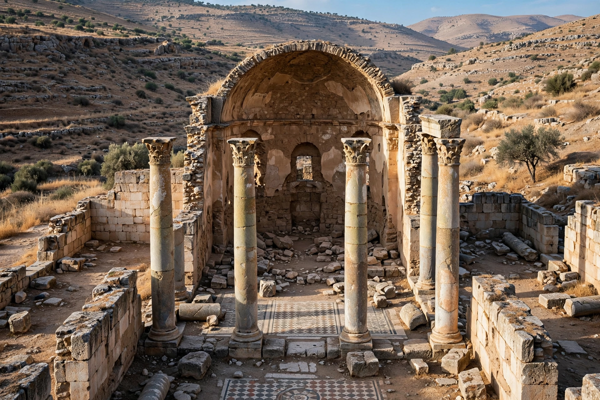

Donatism was a Christian schismatic movement in Roman North Africa, named after the Berber bishop Donatus Magnus, which held that the Church must be a body of the pure, and that clergy who had lapsed under persecution — the traditores who had handed over scriptures or offered sacrifice during Diocletian's Great Persecution — could not validly administer sacraments. The Donatist church, with its own rival hierarchy of bishops, flourished from 311 into the fifth century and was a principal adversary — and formative influence — of Augustine of Hippo.
The schism began in Carthage in 311, when Caecilian was consecrated bishop by, among others, Felix of Aptunga, whom rigorists accused of having been a traditor during the persecution. The Numidian bishops, backed by the wealthy widow Lucilla, rejected Caecilian, consecrated Majorinus and then Donatus in his place, and rebaptized converts from the Catholic side. Appeals to Constantine — the first time Christians asked an emperor to settle a church dispute — produced the Council of Arles (314), which ruled against the Donatists; Constantine's attempts at enforcement and coercion failed, and the schism entrenched itself, drawing strength from Numidian local identity and rural resentment of the coastal, Latinized establishment. Donatist extremists, the Circumcellions, roamed the countryside attacking Catholic clergy and creditors, venerated as champions of the poor by some and denounced as fanatical brigands by others.
The doctrinal core was sacramental theology: does the validity of baptism or ordination depend on the moral purity of the minister? The Donatists said yes, echoing the African tradition of Cyprian of Carthage, who had required rebaptism of heretics. The Catholic answer, developed by Optatus of Milevis and supremely by Augustine, was that sacraments act ex opere operato — by Christ's action, not the minister's merit — so that even an unworthy priest truly baptizes. Augustine's long controversy with Donatist writers such as Petilian and Cresconius shaped his ecclesiology, his theology of baptism, and — fatefully — his justification of state coercion against schismatics, citing "compel them to come in" (Luke 14:23). At the imperially staged Conference of Carthage in 411, with some 280 bishops on each side, the Donatists were adjudged defeated, and laws of Honorius suppressed their church by force.
Suppression drove Donatism underground rather than extinguishing it at once; Donatist communities persisted through the Vandal kingdom and the Byzantine reconquest, fading from the record by the time of Gregory the Great and the Arab conquests of the seventh century. The controversy left a permanent mark on Western theology: the Catholic position on sacramental validity, and the very concept of a mixed church of wheat and tares awaiting judgment, are Augustinian answers to Donatist questions.